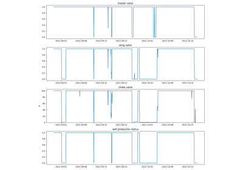
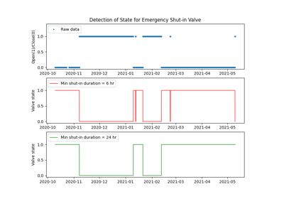
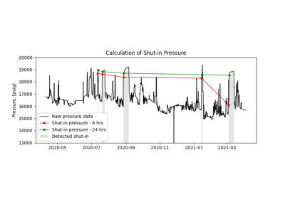
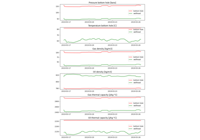

Oil and Gas Functions
Examples of algorithms used in the Oil and Gas industry.

Check for the production status of a well
Check for the production status of a well


Detection of valve shut-in state
Detection of valve shut-in state

Calculation of shut-in pressure
Calculation of shut-in pressure

Calculate fluid properties given pressure and temperature
Calculate fluid properties given pressure and temperature